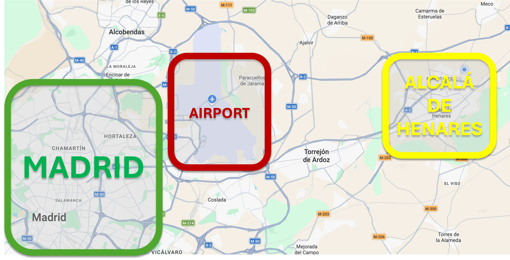
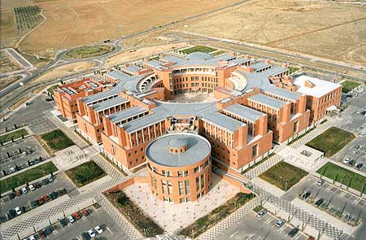
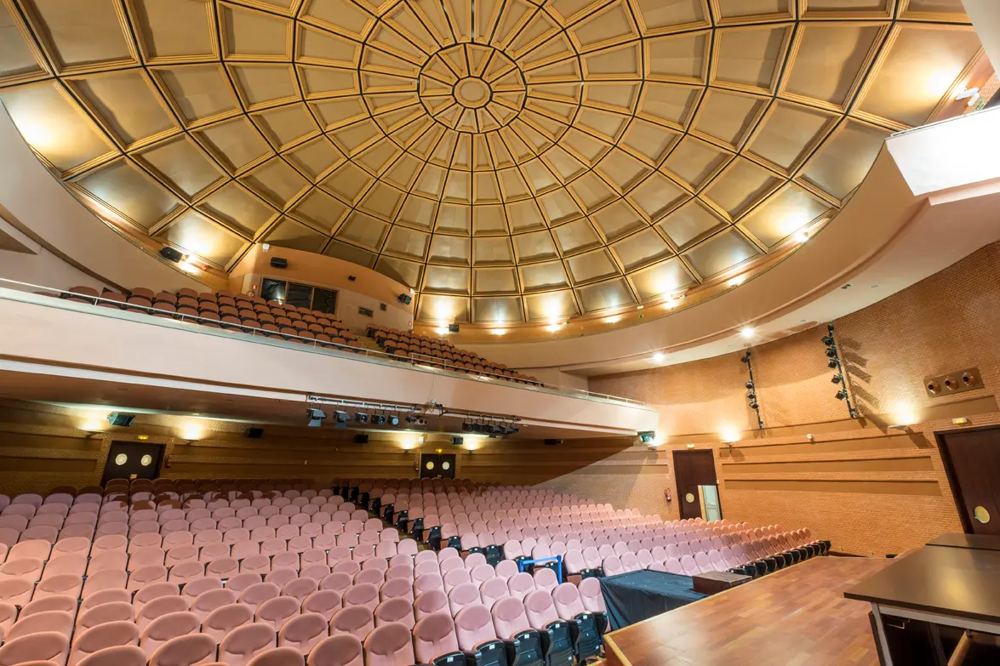

Important information for your trip to CNSM 2026 in Alcalá de Henares.
CNSM 2026 will be held in the lively historic city of Alcalá de Henares (Spain), a UNESCO World Heritage Site, specifically on the University of Alcalá campus.
Escuela Politécnica Superior - UAH
Campus Universitario, Ctra. Madrid-Barcelona km, 33, 600
28805 Alcalá de Henares (Spain)
You can find the interactive Map here:
Alcala de Henares is a UNESCO World Heritage city situated approximately 30 km from central Madrid and close to Adolfo Suárez Madrid-Barajas Airport, with direct road and public transport connections.

Universidad de Alcalá has several campuses. The most famous Old-Campus is spread around the historical city, being the 15th Rectorate building the most significant and well-known building. We recommend reserving your accommodation in the historical old city for its charming, vibrant atmosphere, easy transportation and accesses. Nevertheless, the Conference sessions are held in the Escuela Politécnica Superior (EPS) which is located on the external campus of the Universidad de Alcalá, in Alcalá de Henares. Social activities will be celebrated in the historical Old-Campus.

The external EPS campus provides a modern academic and research environment that promotes innovation, international collaboration, and close interaction with industry and technology partners. It also benefits from excellent transport connections, with the historic city center easily accessible in around 15 minutes by bus (Bus line 2 or, alternatively, Bus line 3).
The conference's main program, including the opening ceremony, plenary sessions, and selected keynote presentations, will be hosted in the EPS Auditorium (Salón de Actos), a fully equipped venue designed for lectures, technical presentations, and multimedia events. Parallel technical sessions and additional conference activities will take place in the Sala de Grados, an institutional venue regularly used for academic ceremonies, PhD defenses, and high-profile events.

Some of the workshops will be hosted in other rooms: Sala Torres Quevedo, Sala Juan de la Cierva, or Sala Francisco Coello. For detailed room assignments and session locations, please refer to the Technical Program.
To ensure participants' comfort throughout the conference, the EPS also offers on-campus lunch facilities, including a cafeteria and catering services, providing convenient meal options during the event.
The closest airport is Adolfo Suárez Madrid-Barajas Airport (MAD). Alcalá de Henares is approximately 25–30 km from the airport. The most convenient options are the direct interurban bus, taxi, or app-based ride-hailing services.
Bus 824 provides a direct public-transport connection between Madrid-Barajas Airport (T1/T2), Torrejón de Ardoz and Alcalá de Henares. Some services continue to the University of Alcalá / Escuela Politécnica area. Participants arriving at Terminal 4 can use the airport’s free inter-terminal shuttle to reach T1/T2.
| Option | Route | Approx. time | Estimated cost | Best for |
|---|---|---|---|---|
| Bus 824 | Airport T1/T2 → Alcalá / University | ~45–60 min | €3.00/person (single ticket) | Recommended public transport |
| Taxi | Airport → Alcalá de Henares | ~20–30 min* | ~€35–45/vehicle* | Convenient with luggage |
| Uber | Airport → Alcalá de Henares | ~25–30 min* | ~€32/vehicle* | Convenient app-based alternative |
| Cabify / Bolt | Airport → Alcalá de Henares | ~25–30 min* | Check current fare in app* | Convenient app-based alternative |
| Via Madrid + Local Train | Airport → Madrid → Alcalá | ~60–90 min | ~€5–10/person | Alternative depending on terminal |
| Rental car | Airport → A-2 → Alcalá | ~20–30 min* | Variable + fuel | Useful for further travel |
*Travel times and prices are indicative and may vary depending on traffic, time of day, demand and the selected service. Public-transport fares should be checked again shortly before the conference.
Ride-hailing services such as Uber, Cabify and Bolt operate in the Madrid area and can be used for trips between the airport and Alcalá de Henares. Airport pick-up points vary by terminal and service; participants should check the corresponding app upon arrival.
Alcalá de Henares is connected to central Madrid by Cercanías commuter trains. Alcalá de Henares station is served by lines C-2, C-7 and C-8. Participants should consult Renfe shortly before travelling for current schedules and any temporary service changes.
Most recommended hotels are located in or close to the historic city centre, while the conference venue (Escuela Politécnica Superior, EPS) is on the external university campus. Local Bus Line 2 and Bus Line 3 connect the historic centre with the Hospital/University area; the journey is typically around 15–20 minutes. Taxi and app-based services such as Uber, Cabify and Bolt are convenient alternatives. Alcalá Universidad railway station is another useful reference point for the external campus.
Participants of CNSM 2026 are responsible for booking their own accommodation. To assist with your planning, we are pleased to share a few suggestions with special discounted rates. However, you are free to choose any accommodation that best suits your preferences and budget.
Important: Alcalá de Henares is a popular destination for conferences, exhibitions, and cultural events. Therefore, we strongly recommend that you book your accommodations as soon as possible, as availability may run out well in advance.
We have partnered with a few providers to offer discounted rates for CNSM 2026 attendees.
For both hotels, the promotional code is as follows: CONGRESO CNSM26
Alcalá de Henares offers a wide variety of accommodation options, including hotels, boutique guesthouses, apartments, and hostels to suit different budgets and preferences.
Please note that the conference venue is located on the northern outskirts of the city. When making your reservation, keep in mind that it is approximately a 20-minute bus ride or about a one-hour walk from the historic city center. We therefore encourage participants to consider the venue's location and available transport connections when selecting their accommodation.
We encourage you to explore accommodation platforms such as Booking.com, Airbnb, or the Alcalá Tourist Office website for additional options.
Spain is part of the Schengen Area. Participants who are nationals of countries requiring a Schengen visa should apply for a short-stay Schengen visa through the competent Spanish Embassy or Consulate. A Schengen visa allows stays of up to 90 days in any 180-day period, subject to the applicable entry requirements.
Participants are strongly encouraged to start the visa application process well in advance of the conference and to consult the official website of the Spanish Ministry of Foreign Affairs, European Union and Cooperation for up-to-date information on visa requirements, passport validity, supporting documentation and entry conditions. Holding a visa does not automatically guarantee entry into Spain.
Registered CNSM 2026 participants who require an official invitation letter for visa purposes may request one from the CNSM 2026 Organizing Committee. This letter of invitation, however, constitutes neither any obligation by the organisers of the congress nor by the organizing committee to cover any travel and accommodation expenses, fees or other costs connected with attending the meeting and staying in Spain.
For invitation letter requests and for more information please contact us via elisa.rojas@uah.es
Required information: